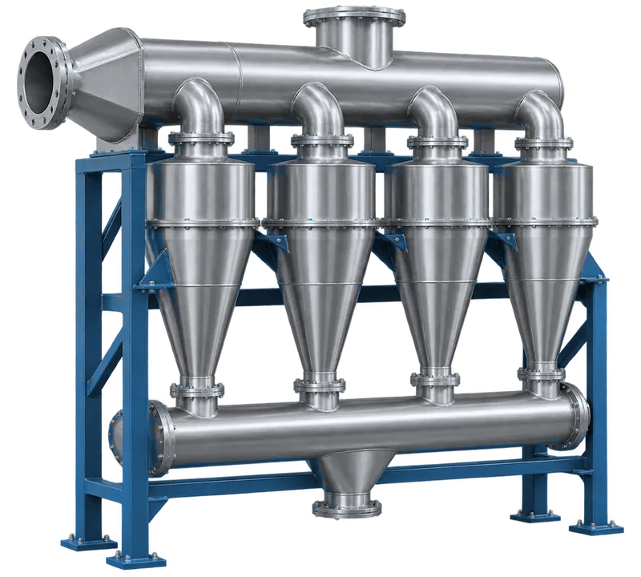
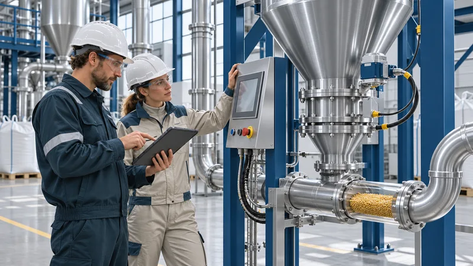

Industriële luchttechniek
Schone, veilige en efficiënte luchtoplossingen voor uw proces.





AIRTECHNIC / Pneumatisch transport
Pneumatisch transport van poeders en granulaten, van losse component tot complete procesinstallatie.
Klik op een + in het beeld en ontdek het component
Schone, veilige en efficiënte luchtoplossingen voor uw proces.
Betrouwbaar en gecontroleerd omgaan met poeders en granulaten.
Van engineering tot inbedrijfstelling.
Beeld: technische projectillustratie
Bekijk het project
Eén technisch aanspreekpunt voor industriële luchttechniek en bulkverwerking, van ontwerp tot inbedrijfstelling.

We brengen uw proces en de gewenste capaciteit in kaart. Bij pneumatisch transport kijken we naar het materiaal en het leidingtracé. Bij industriële stofafzuiging onderzoeken we waar stof vrijkomt en welke afzuigpunten nodig zijn.
Samen bepalen we welke procesgegevens nodig zijn om het ontwerp uit te werken.

We ontwerpen een installatie voor uw productieomgeving. Voor het transport van poeders of granulaten werken we luchthoeveelheid, druk en leidingdiameter uit. Voor stofafzuiging stemmen we de ventilator, het leidingwerk en de filtratie op elkaar af.
We stemmen de aansluitingen op uw productielijn af en houden ruimte vrij voor inspectie en onderhoud.
Bespreek het ontwerp van uw installatie
We produceren of leveren de onderdelen volgens het ontwerp en monteren de procesinstallatie op locatie. Daarbij sluiten we het leidingwerk en de geselecteerde componenten aan op de nieuwe of bestaande productielijn.
We stemmen de montageplanning af op de beschikbare ruimte en uw productieplanning.

We starten de installatie op, stellen de bedrijfsparameters af en toetsen de werking aan de afgesproken eisen. Afhankelijk van de toepassing controleren we bijvoorbeeld de transportcapaciteit of de werking van de stofafzuiging.
Bij de overdracht lopen we de bediening en de aandachtspunten voor dagelijks gebruik met uw team door.


Ja. Airtechnic Solutions levert losse componenten en complete procesinstallaties voor industriële luchttechniek en bulkverwerking. Denk aan cyclonen, stoffilters, blowers, ventilatoren en doseersluizen. We helpen u bij de selectie op basis van uw product, de gewenste capaciteit en de aansluiting op uw installatie.
Ja. We onderzoeken hoe uw bestaande installatie voor pneumatisch transport, stofafzuiging of bulkverwerking kan worden verbeterd. Daarbij kijken we naar knelpunten in capaciteit, energieverbruik, slijtage en onderhoud. Op basis van de procesgegevens adviseren we over aanpassingen aan het leidingwerk, vervanging van componenten of uitbreiding van het systeem.
Vertel ons welk product u verwerkt, wat u wilt verbeteren en welke capaciteit u nodig heeft. Bij pneumatisch transport zijn ook de transportafstand, het hoogteverschil en de eigenschappen van het poeder of granulaat relevant. Voor stofafzuiging helpt informatie over de stofbronnen en afzuigpunten. Foto’s, tekeningen en gegevens van uw huidige installatie geven extra inzicht. Samen bepalen we welke aanvullende gegevens nodig zijn.
We leveren oplossingen voor onder meer de voedingsmiddelenindustrie, diervoederindustrie, chemie, recycling en houtverwerking. Onze industriële luchttechniek en solids processing worden ingezet voor het afzuigen en filteren van stof, het pneumatisch transport van poeders en granulaten en het scheiden en doseren van bulkgoederen. Het ontwerp stemmen we af op het product en de productieomgeving.
De keuze hangt af van het product, de gewenste capaciteit, de transportafstand en de beschikbare ruimte. We bekijken onder meer de korrelgrootte, de bulkdichtheid en de gevoeligheid voor productbeschadiging. Met deze gegevens bepalen we of druktransport of vacuümtransport geschikt is en stemmen we de luchtstroom, het leidingwerk en de componenten op elkaar af.
Ja. We ontwerpen installaties voor industriële luchttechniek en solids processing op basis van uw proces en productieomgeving. Daarbij combineren we passende componenten met maatwerk in het leidingtracé, de opstelling en de aansluitingen. Zo kunnen we een nieuwe installatie of een uitbreiding inpassen in uw productielijn.
Ja. Airtechnic Solutions verzorgt onderhoud, revisie en optimalisatie van bestaande installaties. We bekijken de technische staat en de bedrijfsomstandigheden om te bepalen welke werkzaamheden nodig zijn. Preventief onderhoud helpt slijtage tijdig te signaleren en ondersteunt de bedrijfszekerheid van uw pneumatisch transport, stofafzuiging of bulkverwerking.
We starten met een analyse van uw proces, product en capaciteitsvraag. Daarna werken we het installatieontwerp en de componentselectie uit. Na afstemming volgen de levering en montage. Bij de inbedrijfstelling stellen we de installatie af, controleren we de werking aan de hand van de afgesproken eisen en dragen we de installatie over aan uw team.
Vertel ons wat u verwerkt en wat u wilt bereiken.